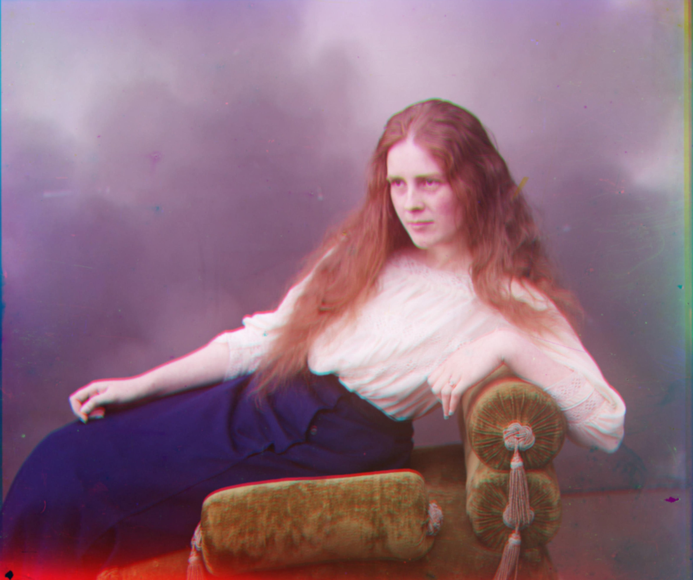
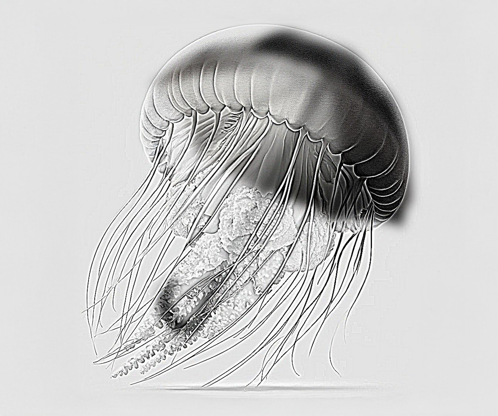
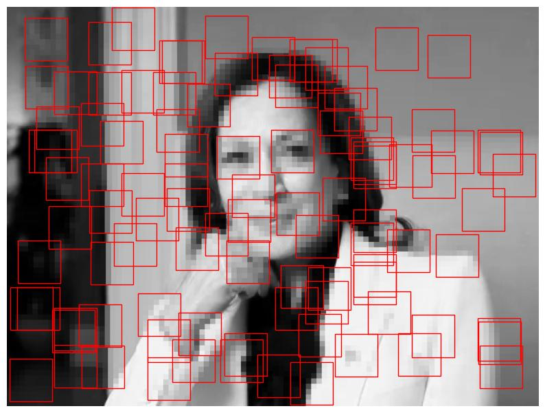

Aligning RGB Images

Project 1: Aligning RGB channels to recreate historic images with clarity.
Fun with Filters and Frequencies

Project 2: Creating hybrid images that appear as one image from a distance
and another
up close.
Face Morphing and Modeling a Photo Collection

Project 3: Using facial landmarks to morph and blend faces across images.
Stitching image mosaics part 2

Project 4B: Feature Matching for Autostitching.